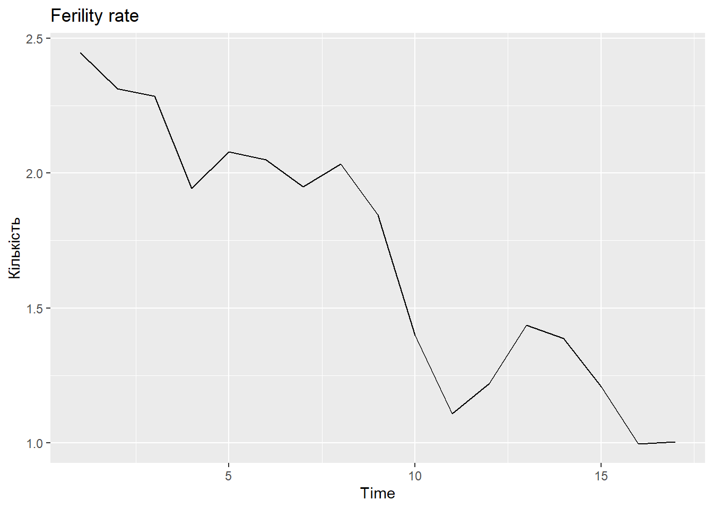
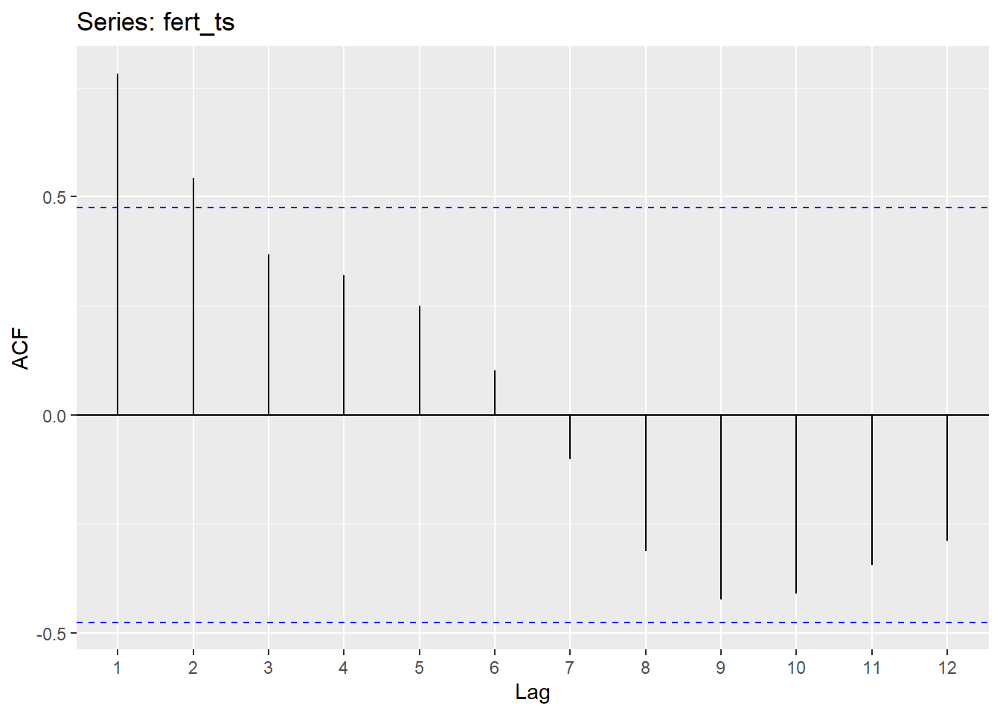
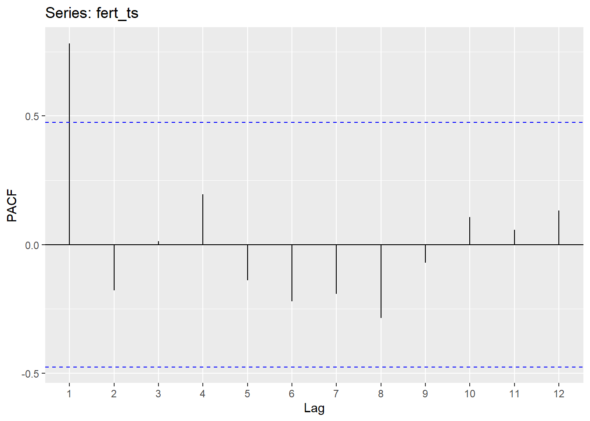
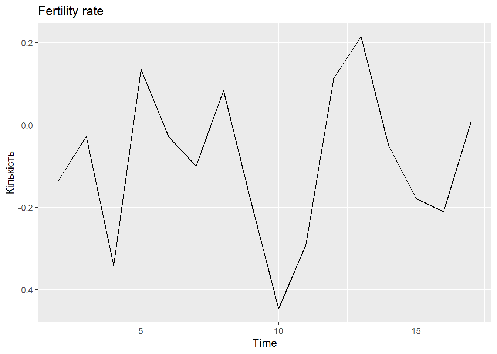
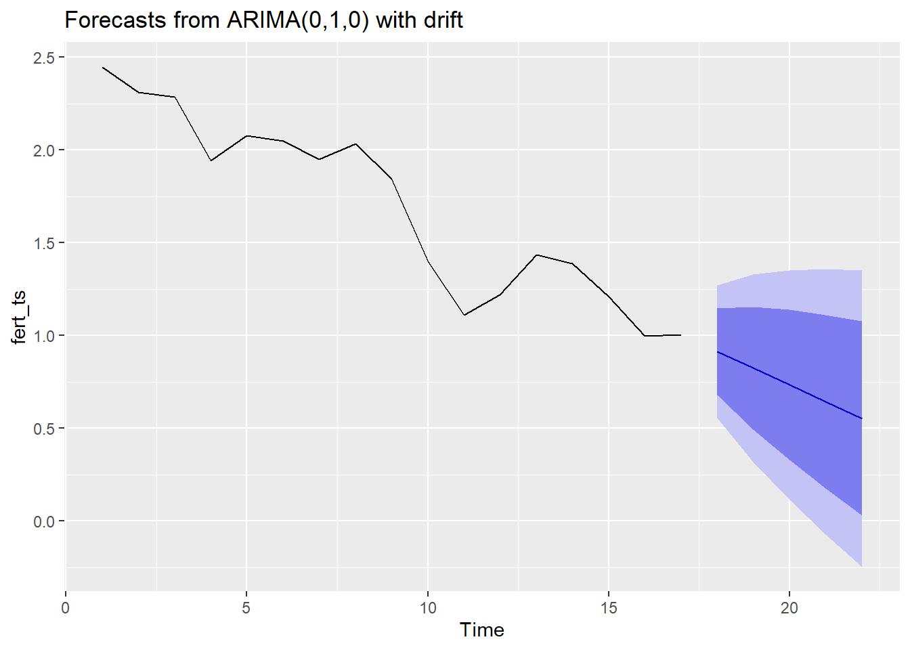

#install.packages(c("forecast", "jsonlite", "ggplot2"))
library(forecast)
library(urca)
library(jsonlite)
library(ggplot2)
library(dplyr)
dir.create("figures", showWarnings = FALSE)Лабораторна робота № 8. Побудова ARIMA-моделі часового ряду і прогнозування на її основі
Документ зроблено в Quarto
Мета: побудова ARIMA-моделей часового ряду та прогнозування на їх основі засобами мови R (пакет forecast, Hyndman 2018).
Завдання
Отримано дані ЧР (варіант — демографія України, Worldometer, отримані у ЛР2; файл data/raw/median_year.json) і необхідно:
- виконати візуалізацію ЧР;
- перевірити ЧР на стаціонарність і звести до стаціонарного (диференціювання, тести
ndiffs, KPSS); - виконати структурну та параметричну ідентифікацію ARIMA-моделі (
AIC/AICc/BIC, АКФ/ЧАКФ); - дослідити альтернативні моделі;
- знайти оцінку короткострокового прогнозу на величину \(h\) наступних моментів ряду та візуалізувати прогноз.
Хід роботи
Крок 1. Підготовка середовища
Крок 2. Завантаження даних та ts-об’єкт
ЧР — коефіцієнт народжуваності України (fertilityRate), річні дані 1950–2026 рр. Створимо об’єкт типу ts з частотою 1 на рік.
demo_path <- "data/raw/median_year.json"
stopifnot(file.exists(demo_path))
demo <- fromJSON(demo_path) |>
select(year, fertilityRate, total)
fert_ts <- ts(demo$fertilityRate)
fert_tsTime Series:
Start = 1
End = 17
Frequency = 1
[1] 2.447 2.312 2.285 1.943 2.078 2.049 1.949 2.033 1.845 1.399 1.108 1.221
[13] 1.436 1.387 1.208 0.997 1.004До 2020 р. спостереження з кроком 5 років, далі — щорічні; у ts це враховано як нерівномірна річна сітка (усі наступні висновки стосуються порядку спостережень, а не календарних інтервалів).
Крок 3. Візуалізація ЧР
autoplot(fert_ts) +
ggtitle("Ferility rate") +
ylab("Кількість")
Ряд має виражений спадний тренд (від ~2.45 у 1950-х до ~1.0 у 2020-х), тому очікуємо нестаціонарність.
Крок 4. Стаціонарність і диференціювання
Оцінки АКФ та ЧАКФ вихідного ряду:
ggAcf(fert_ts)
ggPacf(fert_ts)
Повільне лінійне спадання АКФ — ознака тренду (нестаціонарність).
fert_ts |>
diff() |>
autoplot()+
ggtitle("Fertility rate") +
ylab("Кількість")
fert_ts |>
diff() |>
Box.test(lag=10, type="Ljung-Box")
Box-Ljung test
data: diff(fert_ts)
X-squared = 8.8899, df = 10, p-value = 0.5426Крок 5. Побудова не сезонної ARIMA-моделі
fit <- auto.arima(fert_ts, seasonal=FALSE)Модель прогнозу має наступний вигляд.
fit %>%
forecast(h=5) %>%
autoplot(include=80)